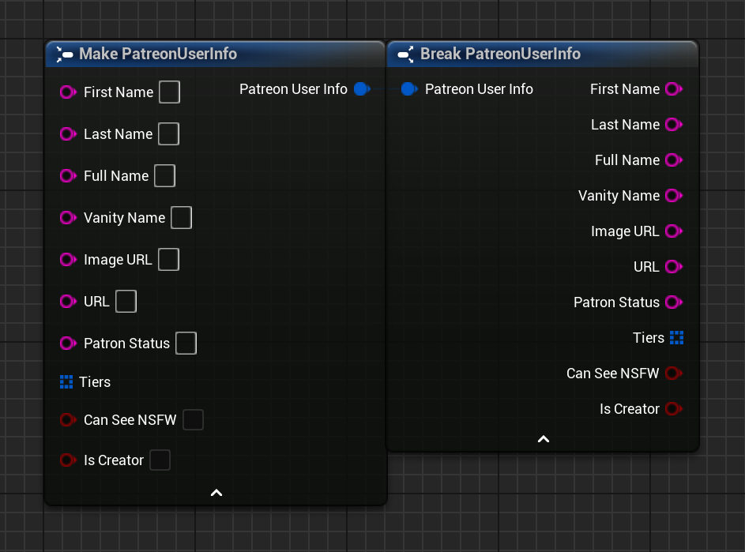
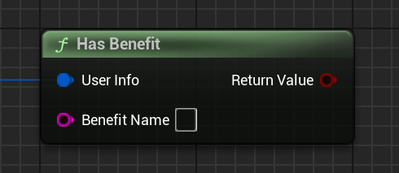

BP Struct: Patreon User Info
| C++ Struct | FPatreonUserInfo |
|---|

Stores information related to a user and their subscription(s).
Properties
-
First NameStringTher user's first name (may be empty).
-
Last NameStringTher user's last name (may be empty).
-
Full NameStringThe user's full name (usually the combination of
First NameandLast Namebut may be different). -
Vanity NameStringThe user's preferred nickname, if they have set one (may be empty).
-
Image URLStringA URL pointing to the user's avatar image
-
Patron StatusStringIndicates the user's current pledge status for your campaign.
Value Meaning active_patronThey are currently subscribed to your campaign declined_patronThey have attempted to subscribe, but payment failed former_patronThey used to subscribe, but currently do not empty This user has never subscribed to your campaign before -
TiersArray of
Patreon Tier InfoA list of all the tiers this user is currently entitled to with their subscription. This will often include multiple entries even if they have only pledged to a single tier, as pledging to a higher tier can include all tiers below it.
-
Can See NSFWBoolIf
true, then this user has enabled NSFW content in their Patreon account. -
Is CreatorBoolIf
true, then this user is also the creator of the campaign!If you are testing this plugin with your creator account, then this will always be
true, and you may see some other differences when using that account vs. a regular subscriber account (e.g., the creator typically has no entitled tiers, the scopes enabled on your access token after logging in may be different, etc.).This property is mainly here to allow for a sanity check in cases like that, but you could also use it to make a 'creator-only' test mode, for example if you are unlocking certain content at certain tiers you could set ALL content to unlock for the creator account to let you test the unlocked behavior of everything everywhere all at once.
Functions
-
Has Benefit
Checks if a given user is entitled to a specific benefit/reward.
Will search all benefits of all tiers a user is entitled to.
Inputs
-
User InfoPatreon User InfoThe user to check
-
Benefit NameStringThe name/title of the benefit/reward to check for.
Case-insensitive.
Returns
True, if any tier the user is entitled to includes the specified benefit. Otherwise,False. -
-
Has Tier
Checks if a given user is entitled to a specific tier.
Inputs
-
User InfoPatreon User InfoThe user to check
-
Tier NameStringThe name/title of the tier to check for.
Case-insensitive.
Returns
True, if any tier matches the name specified. Otherwise,False. -
For any questions, help, suggestions or feature requests, please feel free to contact me at nbpsup@gmail.com